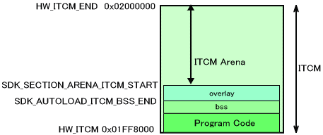
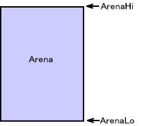

NitroSDK allows you to define nine different Arena regions: main memory (one for ARM9 & one for ARM7), expanded main memory, ITCM, DTCM, shared memory users, shared work RAM (one for ARM9 & one for ARM7), and dedicated work RAM for ARM7. Each region gets an ID and is defined as an OSArenaId enumerated type, as shown below.
| OS_ARENA_MAIN | Arena in main memory for ARM9 |
| OS_ARENA_MAIN_SUBPRIV | Arena in main memory for ARM7 |
| OS_ARENA_MAINEX | Expanded arena in main memory |
| OS_ARENA_ITCM | Arena in ICTM |
| OS_ARENA_DTCM | Arena in DTCM |
| OS_ARENA_SHARED | User information Arena in shared memory |
| OS_ARENA_WRAM_MAIN | Arena for ARM9 in shared work RAM |
| OS_ARENA_WRAM_SUB | Arena for ARM7 in shared work RAM |
| OS_ARENA_WRAM_SUBPRIV | Arena in ARM7 work RAM |
These Arenas are initialized by OS_InitArena(). ARM7 configures Arena regions in the following locations: main memory, shared work RAM, and ARM7 work RAM. The rest of the Arenas are configured by ARM9. The figure below illustrates the standard memory maps during development.
Arena in ITCM
This explains the ITCM portion.
The lower portion of ITCM stores the SDK's program code. If the user specifies the overlay module, it is placed next. By taking into consideration the maximum address used by the overlay, the portion that follows determines the ITCM arena. If there is no overlay, the ITCM arena begins at SDK_AUTOLOAD_ITCM_BSS_END.
The starting address of this ITCM arena is determined automatcially in the lcf file as SDK_SECTION_ARENA_ITCM_START.
The code placed in ITCM is the interrupt handler and part of the DMA function. This part is transferred to ITCM by the autoload feature before NitroMain() starts. This transferred part can be specified also by the user.

Arenas in main memory, expanded memory, DTCM and shared regions
The Arenas in main memory, expanded memory, DTCM, and shared regions are explained.
If the main memory size set withOS_EnableMainExArenais 8 MB, then the extended arena in main memory can be used. But if the main memory size set withOS_DisableMainExArenais 4 MB or runs on the DS system, the extended arena in main memory cannot be used. (Functions that declare that the extended arena in main memory is used or not used must be called beforeOS_InitorOS_InitArena.)
The following two figures show examples of when the main memory size is set to 8 MB and 4 MB. Symbols that start with SDK_ are defined automatically in the lcf file.
The data region used for the interrupt process is allocated in the lower address of DTCM. The region can also be secured by a user addition. However, no program code can be placed in DTCM. Like ITCM, the maximum address used by the overlay module is taken into consideration to determine the DTCM arena starting address SDK_SECTION_ARENA_DTCM_START. When there is no overlay, the value of SDK_AUTOLOAD_DTCM_BSS_END is used.
HW_MAIN_ARENA_LO is discussed below.
SDK_MAIN_ARENA_LOis positioned far back behind the static part of main memory, the program loaded by overlay, and the overlay portion of the BSS region. This is the same as overlays in ITCM, DTCM, and extended main memory.
Arenas in work RAM
The standard practice is to allocate all of work RAM to ARM7, so it is assumed that this Arena also will be used by ARM7. Shared work RAM and dedicated ARM7 work RAM are allocated to contiguous regions. Whether a work RAM Arena can be secured will vary depending on the size of the program code stored here. The examples below show cases where the program is so big it spills into dedicated ARM7 work RAM, and where it is contained in shared work RAM. In the first example, there is no Arena in shared work RAM for either ARM7 or ARM9. In the second example, there is no Arena in shared work RAM for ARM9.
Managing Arenas and Securing Memory
The Arena region depends on the pointers that indicate the start and the end of the region.

The system stores only these two pointers and information regarding whether or not the Arena has been initialized. In other words, there is no information regarding the extent to which the Arena is used, the initial locations of the pointers, or the content of the Arena.
For each Arena, there are pointers for the start and end of the Arena region and the information about initialization. This data is collected together and placed in a System shared region.
When memory blocks are secured from an Arena, they can be secured from either the start or the end of the region. Accordingly, the memory region boundary moves on its own. For example, to secure a block ofsize1bytes from the start of the region (the low end), after callingOS_GetArenaLo(), callOS_SetArenaLo()to set the boundary with the returned value.
In the following figure, a block of size2-bytes is secured from the tail end of the Arena (i.e., from the high-order end).
This series of tasks is performed automatically. The two functionsOS_AllocFromArenaLo()andOS_AllocFromArenaHi()are available for securing memory from the start (the low end) or the end (the high end) of the memory region. We recommend using these functions when using the arena.
Arenas are not suitable for frequently securing and releasing memory during the game. They are most often used for general assignments like securing lump regions for various purposes at the time of initialization. The OS has a system for repeated memory allocation during the game usingOS_AllocFromHeap().
OS function list (Arena), OS function list (Alloc)
03/16/2006 Revised figure depicting arena management and securing memory and added a description.
08/27/2005 Made revisions in line with ITCM, DTCM, and extended main memory arena overlay support.
07/28/2005 Corrected mistakes. 04/15/2005 Changed the locations of main memory and the arean in DTCM
12/13/2004 Revised terminology and word endings.
10/25/2004 Initial version.OS_InitArena()
CONFIDENTIAL